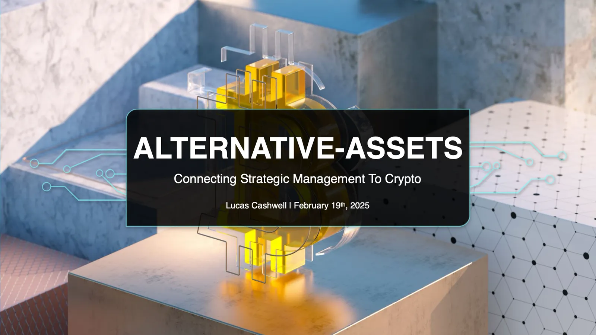
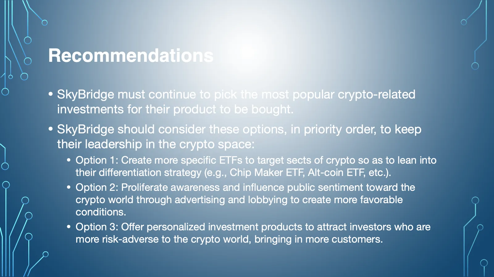

Who am I
1 / 4 ![SkyBridge Capital and MicroStrategy overview. SkyBridge: a private company with a public product, the $CRPT ETF, which bets on alternative assets and related stocks like NVIDIA and Coinbase; some argued it was the best ETF of 2024, returning 74% for the year. MicroStrategy: a public company whose financial products are based solely on Bitcoin, mainly selling Bitcoin as a bond; the stock went up 477% in 2024. Shared challenge: create desirable investment tools for investors interested in crypto despite looming regulatory and social concerns.](../../assets/writing/alternative-assets/slide-2.webp)
2 / 4 ![Strategy. SkyBridge pursues a differentiation strategy: its strength is picking the most desirable investments in all things crypto; it differentiates from frauds and naysayers by selling a package of the most popular crypto investments. MicroStrategy pursues a focused differentiation strategy: its strength is taking the scary volatility out of Bitcoin using debt, for risk-averse investors interested solely in Bitcoin. With the $CRPT top holdings table and Bitcoin and MicroStrategy price charts as of February 18, 2025.](../../assets/writing/alternative-assets/slide-3.webp)
3 / 4 4 / 4
Alternative assets: connecting strategy to crypto
Download the slides (PDF, 2.5 MB) · Read the article version


Download the slides (PDF, 2.5 MB) · Read the article version

